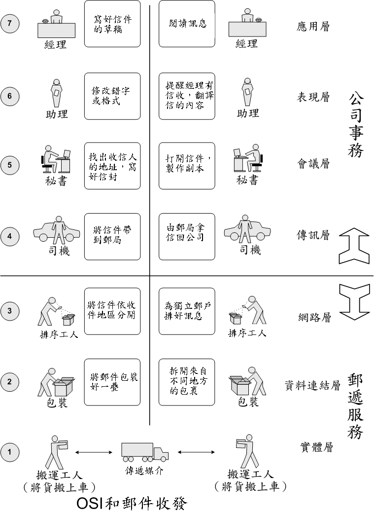

当我们拿到一本书，毫不犹豫地开始从头开始读！甚至我们撞得头破血流还在继续下去，到最后也不知道这本书讲些什么！有这么一本书！开始我们大家一样！但是我坚持了两天，我彻底缴械！他叫《计算机网络原理》！
有种精神叫打破传统，也叫创新！我从来没有放弃过！在"百度百科"里处处碰壁后，在网络的海洋里畅游了半天终于被我找到一个巨人“维基百科”，他对于osi（Open System Interconnection Reference Model开放式通信系统互联参考模型）的七层模型做了这样的举例，让我的大脑豁然开朗！

我想，我是不是更适合从中间读这本书，从应用层向物理层迈进！我试了试，还好！没有失败，这次的尝试让我对以前的知识是一次梳理也是一次重新的认识，暂时还没有自己的总结，不过看维基百科上的图片和解释感觉亲切了好多！
相比与以前的读书，这本书我从中间向前读到第二章，在从中间读完这本书，再汇过来看看第一章！感觉顺畅了很多！带给我一种前所未有的体验！暂且抛弃做着之前的意愿是什么，这个适合我！
总结：书不仅仅可以从第一页开始，借助网络的力量，也可以从中间开始，我们缺乏的是发现和创造！
学会找巨人，省了好多实验和探索的时间！